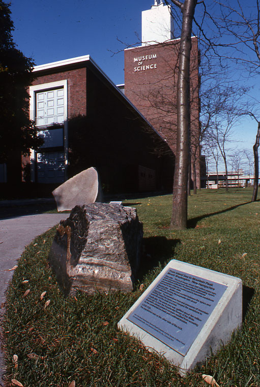
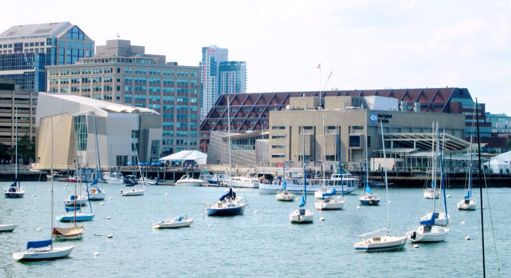
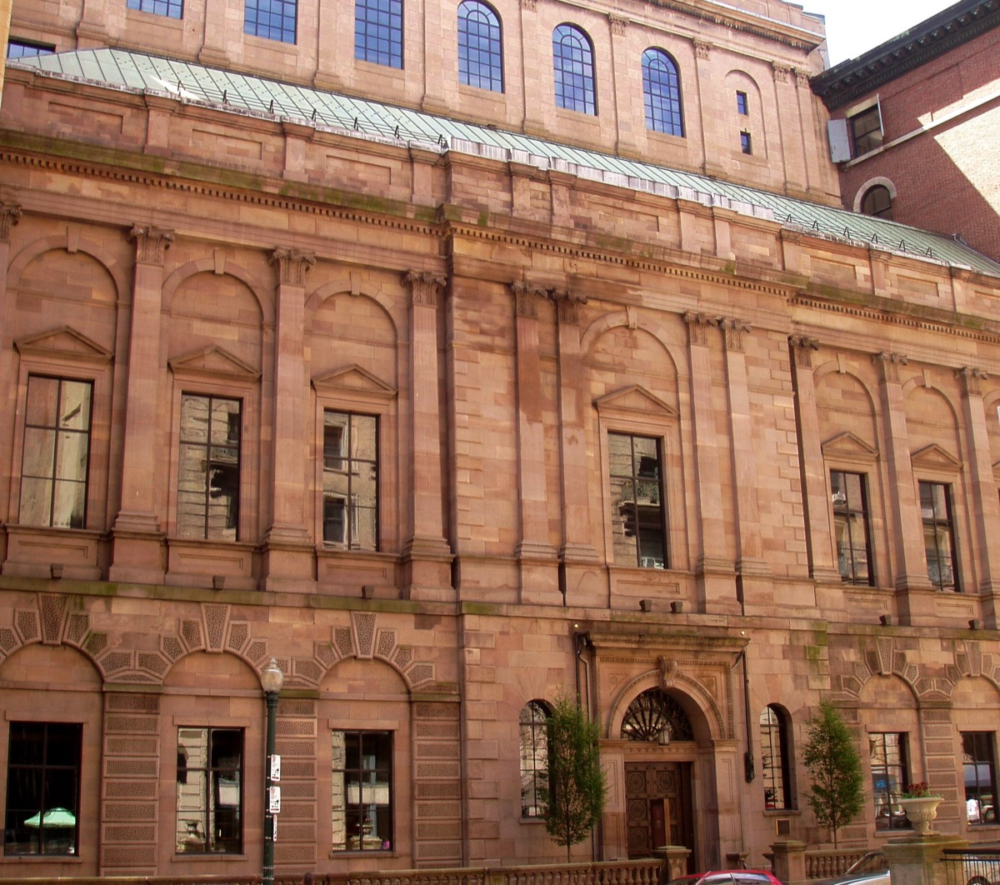
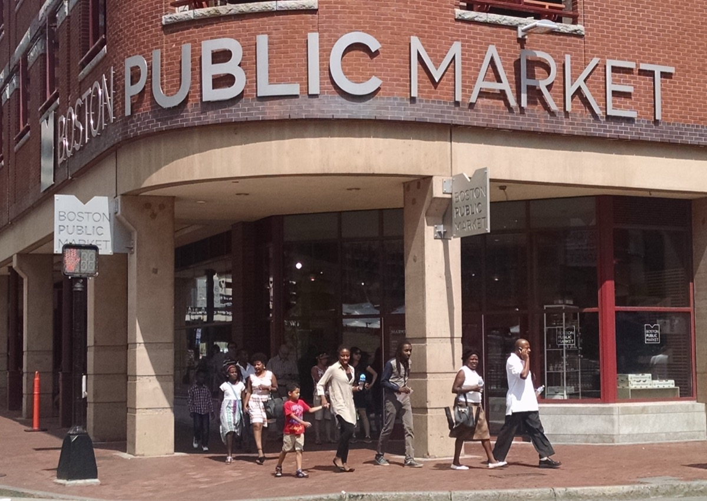
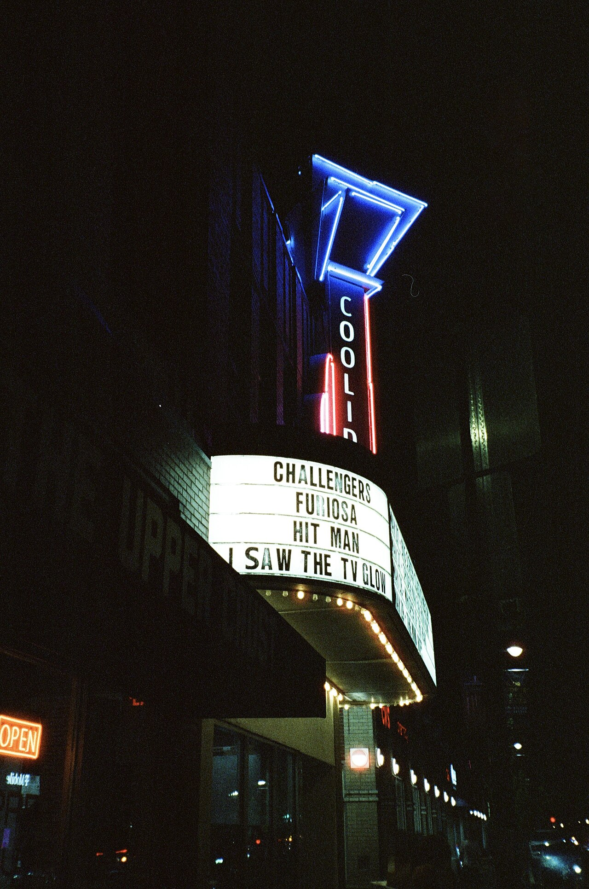
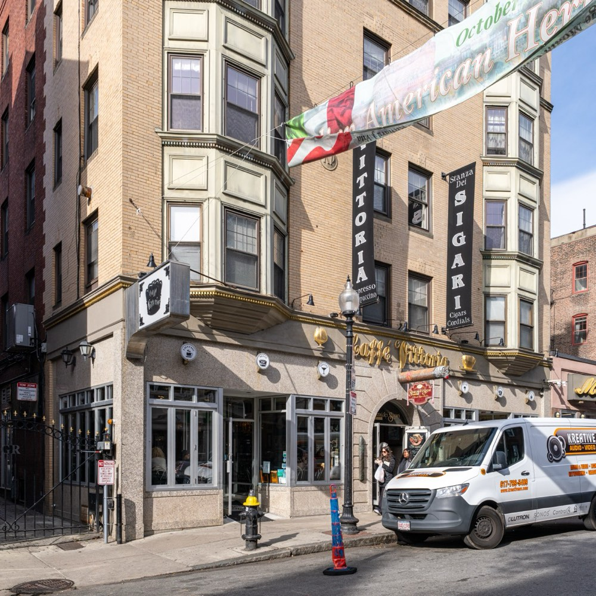
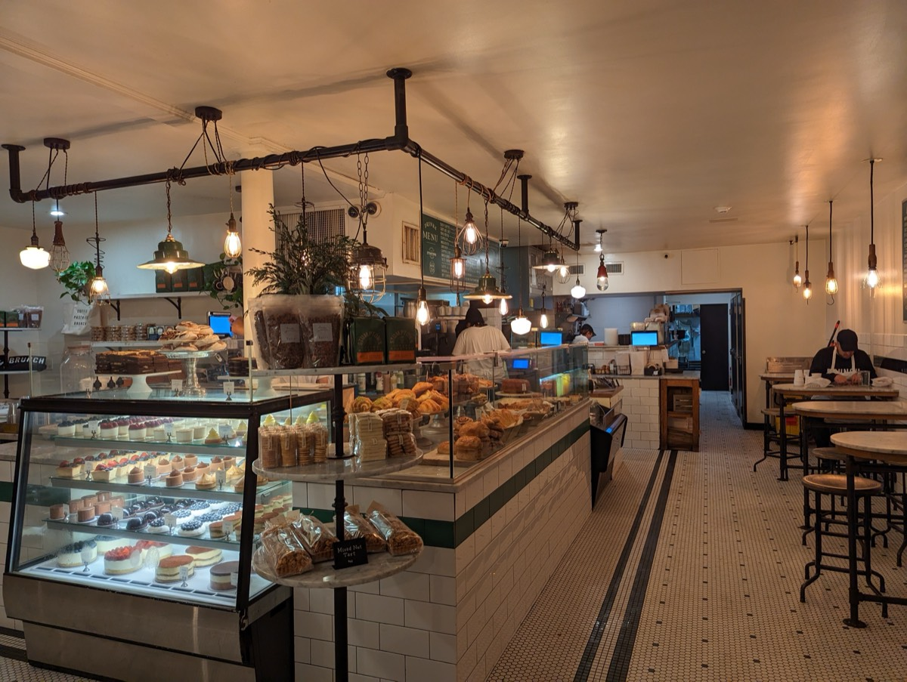

Boston is a city of the indoors as much as the outdoors: two of the best art museums in the country across the street from each other, a library reading room people travel to see, a market hall full of food, independent cinemas, and enclosed walkways in Back Bay that let you cross half a neighborhood without getting wet.
The short answer
Five stops, zero sidewalk
All indoors, all connected by covered routes or a quick T ride.
01 · Museums
Museums: the best indoor things to do in Boston
The MFA and the Gardner are neighbors in the Fenway and fill a full day between them.
| Museum | Address | Nearest T stop | Free hours |
|---|---|---|---|
| Museum of Fine Arts | 465 Huntington Ave | Museum of Fine Arts (Green E) | Wed after 4pm, pay what you wish |
| Isabella Stewart Gardner | 25 Evans Way | Museum of Fine Arts (Green E) | Your birthday; anyone named Isabella |
| ICA Boston | 25 Harbor Shore Dr | Courthouse (Silver) | Thu 5–9pm |
| Museum of Science | 1 Science Park | Science Park (Green) | None |
| Harvard Art Museums | 32 Quincy St, Cambridge | Harvard (Red) | Always |
| Harvard Museum of Natural History | 26 Oxford St, Cambridge | Harvard (Red) | MA residents Sun mornings; check |
| MIT Museum | 314 Main St, Cambridge | Kendall/MIT (Red) | Last Sunday of the month |
| New England Aquarium | 1 Central Wharf | Aquarium (Blue) | None |
Museum of Fine Arts
465 Huntington Ave, FenwayT Museum of Fine Arts (Green E)$27, Wed 4pm+ PWYW

About half a million objects; you cannot finish it. Pick a wing: the Americas, the Japanese temple room, Egyptian, or the Impressionists. Two cafés mean you never have to leave.
Isabella Stewart Gardner Museum
25 Evans Way, FenwayT Museum of Fine Arts (Green E)~$22, Wed–Mon

A Venetian palazzo around a glass-roofed courtyard; rain on that glass is the best sound in Boston. The 1990 theft's empty frames still hang where the paintings were.
ICA Boston
25 Harbor Shore Dr, SeaportT Courthouse (Silver)~$20, free Thu 5–9pm

A glass building cantilevered over the harbor; the fourth-floor gallery's window onto the water is its own exhibit. A rainy Thursday is one of the better cheap evenings in the city.
Museum of Science
1 Science ParkT Science Park/West End (Green)~$29, planetarium extra

Straddles the Charles with the Green Line station attached to it. A lightning show, planetarium, butterfly garden and hundreds of hands-on exhibits. Budget four hours.
Harvard's museums
32 Quincy St / 26 Oxford St, CambridgeT Harvard (Red)Art free; Natural History ~$15

Free since 2023, three collections under a Renzo Piano glass roof. Natural History has the Glass Flowers, a 4,000-piece botanical model collection.
New England Aquarium
1 Central WharfT Aquarium (Blue)~$39

A four-story Giant Ocean Tank with a spiral ramp, penguins, a touch tank, IMAX next door. Go on a weekday if you can; the outdoor seals are free to watch.
02 · Libraries & bookstores
Libraries and bookstores
Boston Public Library and Bates Hall
700 Boylston St, Copley SquareT Copley (Green)Free

A 50-foot barrel-vaulted ceiling, green-shaded lamps, long oak tables. Sargent murals upstairs, a café by the entrance. The best place in Boston on a rainy afternoon.
Harvard Square bookstores
Harvard Book Store, 1256 Mass AveT Harvard (Red)Free to browse

The densest set of bookstores in New England. Harvard Book Store's used-book basement, the tiny Grolier Poetry Book Shop, Raven for academic remainders.
Brattle Book Shop
9 West St, Downtown CrossingT Park Street (Red, Green)Free to browse
Selling used and rare books since 1825, one of the oldest bookstores in the country. Three floors inside when the outdoor carts get covered.
The Boston Athenaeum and Trident Booksellers
10½ Beacon St / 338 Newbury StT Park Street (Red, Green)Free / café prices

A members' library since 1807 opens its first floor to the public. Trident is a bookstore with a full café, open until midnight.
03 · Indoor markets
Indoor markets and food halls
Boston Public Market and Quincy Market
100 Hanover St / 4 S Market StT Haymarket (Orange, Green)Lunch $10–20

Thirty Massachusetts producers with the Haymarket T station underneath. Quincy Market's 1826 granite hall is two blocks away, open until 9pm.
Time Out Market
401 Park Dr, FenwayT Fenway (Green D)$15–25pp
A dozen counters from established Boston kitchens, a block from the MFA. The natural lunch on a museum day.
High Street Place and Hub Hall
100 High St / 80 Causeway StT South Station / North Station (Red)Weekday lunch & dinner
A Financial District atrium food hall, and Hub Hall under the TD Garden connecting directly to the Orange/Green platforms and commuter rail.
04 · Cinemas
Cinemas for a rainy afternoon
Coolidge Corner Theatre
290 Harvard St, BrooklineT Coolidge Corner (Green C)~$14–16

A 1933 Art Deco movie palace, now a nonprofit showing independent films, 35mm repertory and midnight cult movies. Station is across the street.
The Brattle Theatre
40 Brattle St, Harvard SquareT Harvard (Red)~$14

A single-screen repertory cinema since 1953, credited with inventing the Casablanca revival. Double features, retrospectives, a balcony.
Landmark Kendall Square Cinema
355 Binney St, CambridgeT Kendall/MIT (Red)~$15
Nine screens of first-run independent and foreign films, where festival films open in Boston. Longest walk from the Red Line of the three cinemas.
AMC Boston Common
175 Tremont StT Boylston (Green)~$17
The big downtown multiplex, 19 screens, IMAX, across from Boston Common. Chinatown's restaurants are two blocks away for a late dinner.
05 · Covered walkways
The Prudential and Copley Place covered walkways
Prudential Center to Copley Place, without going outside
800 Boylston St to 100 Huntington AveT Prudential / Back Bay (Green E)Free

An enclosed glass bridge over Huntington Avenue links the Prudential to Copley Place, the Westin, Marriott and Back Bay station. Another bridge reaches the Hynes and the Sheraton.
Downtown Crossing and Faneuil Hall on foot
Downtown Crossing to HaymarketT Downtown Crossing (Orange)Free

Short blocks and awnings: Macy's and the Corner Mall indoors, three minutes to the Old State House and Faneuil Hall's covered ground floor.
06 · Bowling & games
Bowling, games and escape rooms
Lucky Strike Fenway
145 Ipswich St, FenwayT Kenmore (Green)~$8–10pp/game
Bowling, pool, arcade games, a full bar behind the Green Monster. The standard Boston rainy-night group plan, fine for two as well.
Level99
Natick Mall, 1235 Worcester StCommuter rail + bus, or car~$30–45pp
About 50 physical and mental challenge rooms played in teams. 40 minutes west of the city, genuinely easier with a car.
Escape rooms
Boxaroo, 7 Water St, DowntownT State / Park Street (Orange)~$30–40pp
Several escape rooms within a few blocks of Park Street. Boxaroo builds original rooms in-house; book ahead on rainy weekends.
Kings Dining and Entertainment, and Flight Club
60 Seaport BlvdT Courthouse (Silver)Afternoon to late
Kings has bowling and late food; Flight Club next door is social darts with automated scoring. Neither is quiet.
07 · Cafés & pubs
Cozy cafés and pubs to wait out the rain
Sometimes the right plan is a corner table and a window.
Caffè Vittoria
290 Hanover St, North EndT Haymarket (Orange, Green)Espresso $3–5

Open since 1929: espresso machines in the window, a tin ceiling, three rooms and no hurry. A cannoli from Modern Pastry two doors down is permitted.
Tatte and the Charles Street cafés
70 & 71 Charles StT Charles/MGH (Red)~7am–7pm

Charles Street is narrow, brick and awning-lined. Tatte for pastries and crowds; Beacon Hill Books & Café has five floors of bookshop and a basement café.
The Sevens Ale House
77 Charles St, Beacon HillT Charles/MGH (Red)Pints $7–9
A narrow Beacon Hill pub with dark wood and a dartboard, the neighborhood's rainy-afternoon bar since 1933. No rush, no TV noise.
The Druid
1357 Cambridge St, Inman SqT Central (Red)Lunch–1am
A small Irish pub with a real fireplace, good Guinness and proper fish and chips. The pub to be stuck in.
Oak Long Bar at the Fairmont Copley Plaza
138 St James Ave, Back BayT Copley (Green)Cocktails $18–22
A long oak room with brass and high ceilings onto Copley Square. Expensive, worth one drink while it pours.
08
A rain-proof one-day itinerary
Everything on the Green Line or a short covered walk from it.
| Time | What | Where | Getting there dry |
|---|---|---|---|
| 9:30am | Coffee and a pastry | Boston Public Market, 100 Hanover St | Haymarket (Orange/Green) opens into the building |
| 10:30am | Faneuil Hall Great Hall and Quincy Market | 4 S Market St | 2-minute walk, arcades most of the way |
| 11:30am | Green Line E to the Museum of Fine Arts | 465 Huntington Ave | Stop is at the door |
| 1:30pm | Lunch | Time Out Market, 401 Park Dr | 5-minute walk, or stay inside the MFA |
| 2:30pm | The Gardner Museum | 25 Evans Way | 5-minute walk from the MFA |
| 4:30pm | Bates Hall, Boston Public Library | 700 Boylston St | Green Line E to Copley; door on the square |
| 5:30pm | Copley Place–Prudential bridges; View Boston if clearing | 100 Huntington Ave to 800 Boylston St | Enclosed walkways the whole way |
| 7:00pm | Dinner in Back Bay or the South End | Boylston St or Tremont St | Short walk under awnings |
| 9:00pm | A film at the Coolidge or a drink at the Oak Long Bar | 290 Harvard St / 138 St James Ave | Green C to Coolidge Corner, station at the door |
09
Staying dry on the T
Several stations open directly into buildings: Haymarket into the Boston Public Market, Prudential into the Prudential Center, Back Bay into Copley Place, North Station into Hub Hall and the TD Garden, Science Park into the Museum of Science. Downtown Crossing connects underground to the Park Street platforms.
The Green Line is the rainy-day line: it stops at the door of the MFA, the library, the Prudential, the Coolidge and the Museum of Science. A single ride is $2.40, a 7-day pass $22.50. Boston rain rarely lasts all day, so keep one outdoor thing in reserve for the afternoon dry window.
FAQ
Rainy days in Boston: common questions
What is the best thing to do in Boston on a rainy day?
The Museum of Fine Arts and the Isabella Stewart Gardner Museum, which are across the street from each other in the Fenway and together fill a full day. The Gardner's glass-roofed courtyard is at its best in rain. If you'd rather not pay, the Boston Public Library's Bates Hall is free and one of the most beautiful rooms in the country.
Can you walk around Boston indoors?
Partly. In Back Bay, the Prudential Center, Copley Place and the Hynes Convention Center are connected by enclosed walkways, so you can go from Huntington Avenue to Copley Square without going outside. Downtown, Quincy Market, the Boston Public Market and Faneuil Hall are within a block of each other and of the Haymarket T station.
Which Boston museums are free on rainy days?
The Harvard Art Museums are free every day. The ICA is free on Thursday evenings from 5 to 9pm, the MFA is pay-what-you-wish on Wednesdays after 4pm, and the MIT Museum is free on the last Sunday of the month. The Boston Public Library and the ground floor of Faneuil Hall are free all the time.
What can you do in Boston when it rains with kids?
The Museum of Science, the New England Aquarium, the Boston Children's Museum and the Harvard Museum of Natural History are the four big ones. Level99 in Natick and Lucky Strike in Fenway work for older kids and teenagers, and the Boston Public Library has free children's story times most days.
Where can I see a movie in Boston when it rains?
The Coolidge Corner Theatre in Brookline is a 1933 Art Deco cinema showing independent and classic films. The Brattle in Harvard Square is a single-screen repertory house with double features. The Landmark Kendall Square Cinema in Cambridge shows first-run independent films on nine screens. AMC Boston Common is the big downtown multiplex.
How much does it rain in Boston?
Boston gets about 43 inches of precipitation a year, spread fairly evenly across the months, with around 10 to 12 wet days per month. Rain rarely lasts all day; a typical Boston rainy day has a dry window in the afternoon, which is worth planning around.